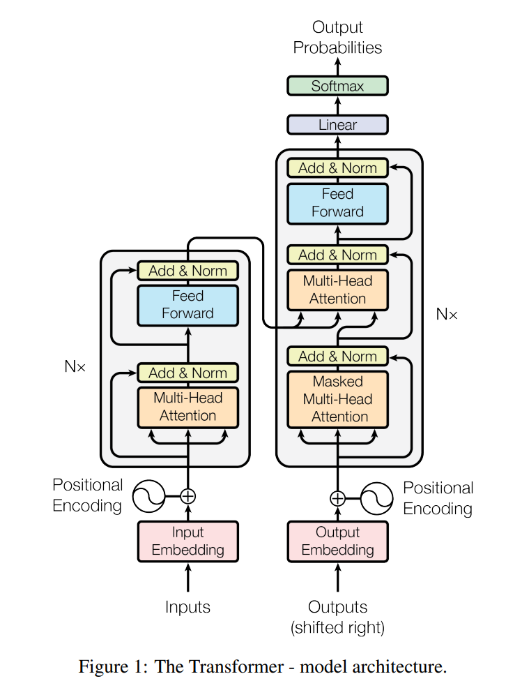
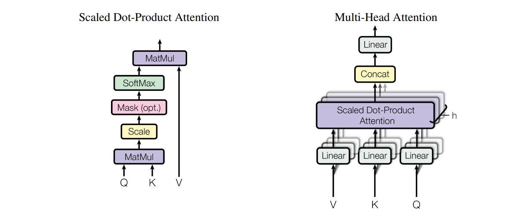

Attention is All You Need¶
Abstract¶
graph LR
A[Convolutional & Recurrent]--> B[Attention Mechanism]
B-->C[Transformer]Conclusion¶
- Attention Mechanism only sequence transduction model
- Great Effects on translation
- Future works
Introduction¶
- encoder-decoder & RNN (LSTM GRU)
- RNN efficiency, information loss of \(H\)
- Attention Mechanism with RNN
- Transformer
Background¶
- CNN cannot handle with long sequences in replacement of RNN, while preserving multiple channels
- Self-attention
Model Architecture¶

Normalization¶
- Difference between batch normalization and layer normalization, new explanations for using layer normalization includes grad, parameters of input normalization, etc.

Attention¶
- Decoder with Masked Multi-Head Attention
- Scaled Dot-Product Attention: \(Attention(Q,K,V)=softmax(\frac{QK^T}{\sqrt{d_k}})V\), where \(Q \in R^{n \times d_k},K\in R^{m\times d_k},V\in R^{m \times d_v}\), Softmax for lines
- Multi-Head Attention: \(MultiHead(Q,K,V)=Concat(head_1,head_2,..., head_h)W^O\), where \(head_i=Attention(QW_i^Q,KW_i^K,VW_i^V)\)
- Self-Attention: Notice in the frame, the three channels from the original channel are keys, values, and queries, where queries are weighted sum of the n input vectors( n encodings of each token) if not taking multi-head into consideration. Note that in the second layer of decoder, queries are on the left.

FFN¶
\(FFN(x)=max(0,x W_1+b_1)W_2+b_2\), where \(d_x:512 \rightarrow^{W_1} 2048\rightarrow^{W_2} 512\)
Embedding & Positional Encoding¶
Note that pre-softmax needs embedding, and the three embeddings share the same weight.
In the embedding layers, we multiply those weights by \(\sqrt{d_{model}}\) (512), so that L2 norm of embedding \(\rightarrow\)1*d + positional encoding can approximately be in the same scale( around [-1,1]).
Positional Encoding adds sequence information to input, thus to attention.
Explanation¶
- Transformers
graph LR
A[Information]-->B[Attention]
B--> C[Aggregated information]
C --> D[Independent Operation]
D --> E[FFN]
E --> F[Projecting onto a New Semantic Space]
F --> G[Output]- RNN
graph LR
A[History Information] --> B
C[Current Information] --> B[MLP]
B--> D[Projecting onto a New Semantic Space]
D --> e[Output]
Details¶
Go to the paper for reference.
Pros and Cons¶
Pros
-
Widely used in NLP
-
Enable multimodality and fast development
- Expectation of new framework
Cons
- Attention is not all you need
- Attention introduces inductive bias and has a common hypothesis on sequential input so that it needs more parameters